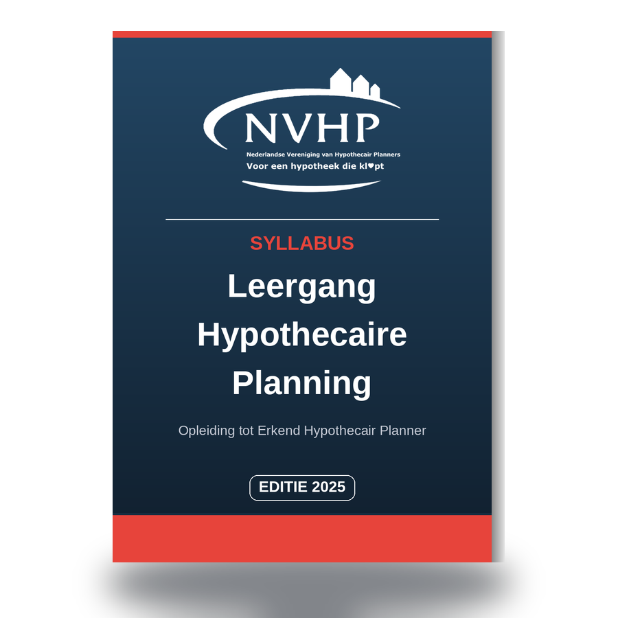

Digitale versie van de vier NVHP-leerboeken (editie 2025) voor de opleiding tot Erkend Hypothecair Planner. Klik op een boek om te lezen, te doorzoeken (Ctrl/Cmd+F) of te printen.
Recht · Fiscaliteit · Fiscaliteit eigen woning
Boek 2Estate planning · Toekomstvoorzieningen
Boek 3Financieren en beleggen · IB-ondernemer en DGA
Boek 4Omgaan met cliënten · CBI · Gezin · Vermogen · Financieringsaanvraag ondernemer · Wonen
Deze syllabus is de basis — maar de titel Erkend Hypothecair Planner maak je waar met permanente educatie. Als lid van de NVHP volg je jaarlijks Masterclasses over actuele thema's, zodat je niet alleen het bovenwettelijke kader bijhoudt, maar ook leert hoe je dat vertaalt naar advies dat uw klant écht rust en overzicht geeft. Zo claim je je plek in de eredivisie van hypotheekadviseurs.
Voorwaarde om de titel in 2027 te mogen blijven voeren: in 2026 minimaal drie verschillende Masterclasses volgen.

Net als de Wettenbundel Financiële Dienstverlening is ook deze syllabus los te bestellen bij de NVHP als gedrukt boek.
Bestellen kan via het NVHP-opleidingsportaal (Syllabi) — inlog met uw NVHP-account vereist — of via de materialenpagina. Vragen? Mail info@hypothecairplanner.nl.
Dit is een digitale, doorzoekbare uitgave van de vier officiële NVHP-leerboeken (editie 2025) voor de Leergang Hypothecaire Planning, de opleiding tot Erkend Hypothecair Planner. De syllabus is gepubliceerd met toestemming van de Nederlandse Vereniging van Hypothecair Planners (NVHP), uitsluitend voor eigen studiegebruik.
Een Erkend Hypothecair Planner (EHP) is een hypotheekadviseur die, bovenop het Wft-diploma Hypothecair Krediet, de Leergang Hypothecaire Planning heeft afgerond en lid is van de NVHP. EHP's onderhouden hun kennis jaarlijks via Masterclasses en onderwerpen zich aan de Gedragscode Erkend Hypothecair Planners.
Eerst volgt u de Leergang Hypothecaire Planning bij een erkend opleidingsinstituut (o.a. DFO, Impact Opleidingen of Lindenhaeghe). Na het behalen van het diploma schrijft u zich in als lid bij de NVHP, waarmee u de beschermde titel Erkend Hypothecair Planner mag voeren.
Nee. De syllabus zelf is bijgewerkt tot 1 maart 2025. Een afgebakende set veelgebruikte kerncijfers is nadien, buiten de NVHP om, bijgewerkt naar 2026 — zie het transparante wijzigingenlog voor precies wat wel en niet is aangepast, met bron. Raadpleeg voor de officiële, actuele examenstof altijd de NVHP zelf.
Ja. Net als de Wettenbundel Financiële Dienstverlening is de syllabus los te bestellen bij de NVHP als gedrukt boek, via het NVHP-opleidingsportaal (Syllabi) of de materialenpagina op hypothecairplanner.nl.
Jaarlijkse verdiepingsbijeenkomsten over actuele thema's in de hypothecaire advisering. Erkend Hypothecair Planners moeten jaarlijks minimaal drie verschillende Masterclasses volgen om de titel te mogen blijven voeren.